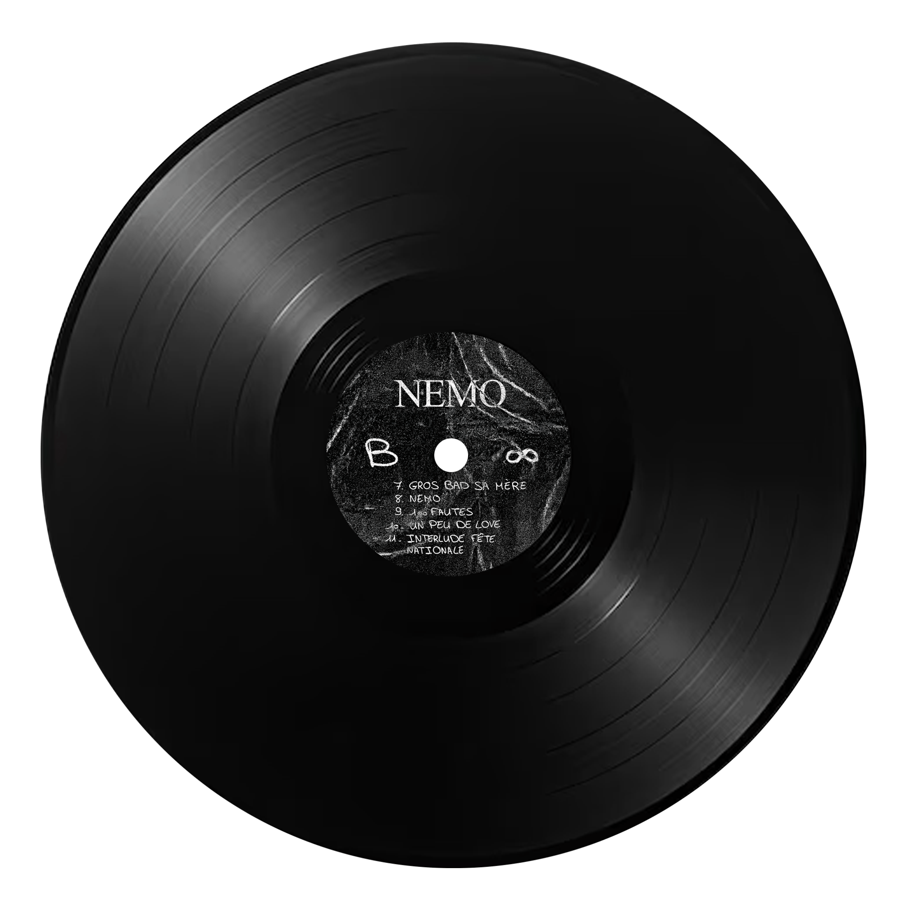
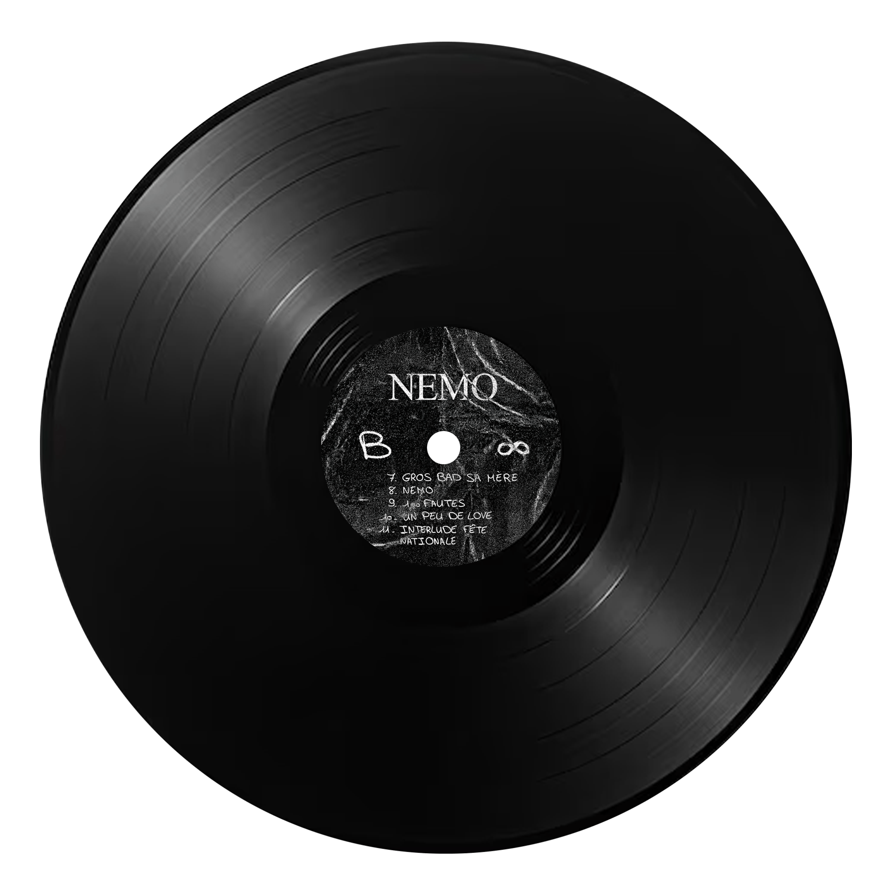

Designed at the request of 12 MED EVENT, this poster for the 2025 Toulon Regatta captures both the energy and elegance of this iconic event. The design highlights the dynamism of the race with sailboats in motion, while celebrating the city’s unique identity through iconic elements such as the Mont Faron cable car.
The minimalist composition, paired with a maritime-inspired color palette, reflects the prestige of this competition and enhances its appeal to the public.


 

For 8eightlow's album Nemo, I designed the back cover of the vinyl, drawing inspiration from the original artwork created by the artist, as well as his character and the central theme of the album. Using his publications and visual universe as references, I aimed to visually convey the essence of his project.
I also incorporated the idea of an interactive sleeve that functions like a mirror: to reveal the tracklist for sides A and B, the sleeve must be rotated. This layout symbolically reflects the mirror concept, highlighting the duality between 8eightlow's social self and inner self, which is a key theme of the album.
Additionally, I designed the center labels for sides A and B of the vinyl records, ensuring aesthetic and conceptual consistency with the overall design. My goal was to capture the artist's unique universe while offering a tactile and interactive experience for the audience.

I created the technical plan for the Ratz car, staying true to its proportions and cartoon aesthetic. This work allowed me to analyze its details and translate them into an accurate and faithful schematic, both playful and technical.

I created the technical plan for the Magic Ball, ensuring its proportions and cartoon aesthetic were preserved. This work allowed me to analyze its unique details and translate them into an accurate and faithful schematic, blending creativity with technical precision.

I designed this poster by emphasizing the elegance and nostalgia of vintage cars. I used an Art Deco typography to reflect the event’s vintage spirit, while integrating warm colors and an attractive visual to grab attention. The clear and hierarchical layout ensures a smooth reading of the key information.

I designed a poster based on the phrase: "Chocolate is better when you feel like dying." It juxtaposes the silhouette of a person enjoying a piece of chocolate with that of a skull, symbolizing the balance between despair and comfort. The vibrant colors contrast with the dark message, while the bold typography enhances the impact of the phrase. This composition visually conveys the idea of chocolate as a comforting pleasure in tough moments.
May this creation awaken your inspiration. (• ◡•)